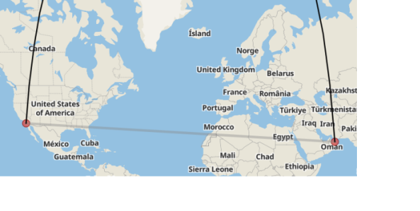

Read on for more.
Experts have been puzzled by the amount of wife missing going on in this husbands head. "This is a record shattering amount of wife missing. In my 40 years studying human psychology and relationships, I have never seen someone miss their spouse this much. Its incredible, really! To witness." Steve Stevenson said relationship therapist and psychology professor at Harvard.
"In fact, the phenomenon has caught the attention of scientists worldwide, who are now referring to it as the 'Eighth Wonder of the Emotional World.' According to recent studies, the husband's yearning has caused a significant spike in the sales of tissues and comfort foods, disrupting global supply chains.

Veteran Captain Oliver Wood did not seem too anxious about the hurricane threat as he and some of his fellow crew met reporters in the lobby at player hotel this morning. At vero eos et accusamus et iusto.
Ducimus qui blanditiis praesentium voluptatum deleniti atque corrupti quos dolores et quas molestias excepturi sint occaecati cupiditate non provident, similique sunt in culpa qui.
Harum quidem rerum facilis est et expedita distinctio. Nam libero tempore, cum soluta nobis est eligendi optio cumque nihil impedit quo minus id quod maxime placeat facere possimus, omnis voluptas assumenda est, omnis dolor repellendus.
Temporibus autem quibusdam et aut officiis debitis aut rerum necessitatibus saepe eveniet ut et voluptates repudiandae sint et.